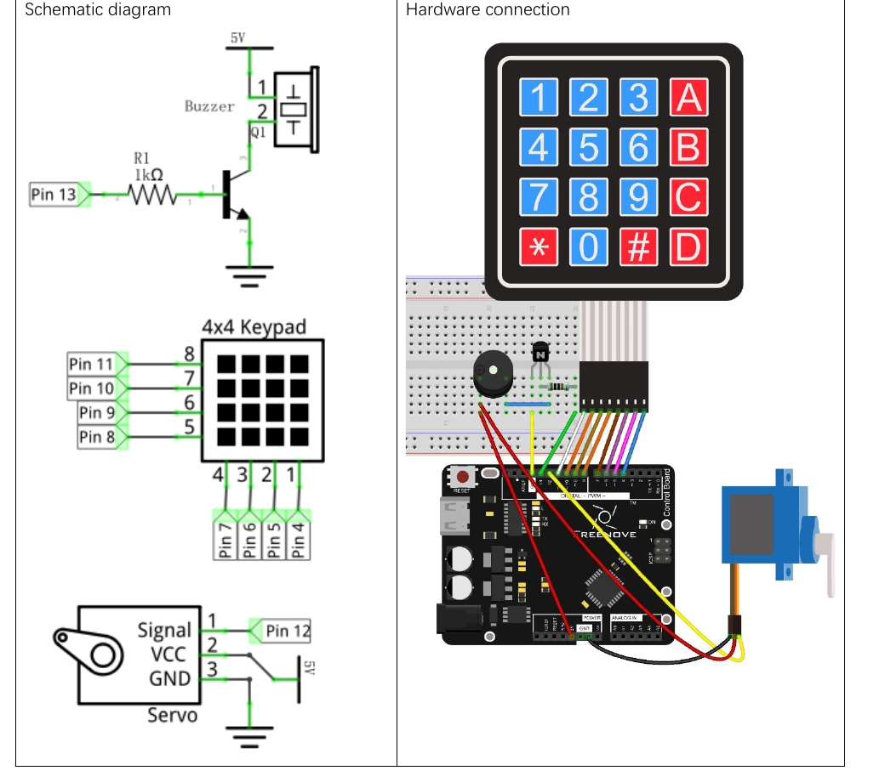

Wire the Freenove 4×4 keypad, a small servo, and an active buzzer; then have Arduino compare four key presses with a secret code.
Gather the parts
Uno-compatible board and USB cable
Freenove-style 4×4 membrane keypad
Small hobby servo
Active buzzer
Kit NPN transistor
1 resistor marked 1 kΩ
Breadboard
15 male-to-male jumper wires
Before you start: this is a low-voltage desk experiment, not a real security lock. Use the source circuit only with one small kit servo and USB power. Do not attach the servo to a door, a latch, a wheel, or anything that can pinch, move unexpectedly, or protect valuables. Keep fingers clear of the servo horn, never force it by hand while powered, and unplug USB before moving wires.
Build it, one check at a time
Step 1 — Read the keypad map
A 4×4 keypad has 16 buttons, but it needs only eight connector paths because the buttons share four rows and four columns. The Keypad library briefly scans those paths and reports the character at the row-and-column crossing. This Freenove layout reads 1 2 3 A across the top, then 4 5 6 B, 7 8 9 C, and * 0 # D.

Reference circuit image: Freenove, Tutorial.pdf, Chapter 19, Project 19.2 Combination Lock, PDF page 182 / printed page 178. Cropped only to the circuit area and otherwise unchanged; reused under CC BY-NC-SA 3.0. The source page is linked in Reference pages.
Step 2 — Connect all eight keypad paths
Follow the pin numbers printed in the reference circuit; ribbon orientation can differ between keypad versions. On the Freenove keypad shown: keypad pin 8 → Arduino D11, pin 7 → D10, pin 6 → D9, pin 5 → D8, pin 4 → D7, pin 3 → D6, pin 2 → D5, and keypad pin 1 → Arduino D4. These are signal connections only—do not connect the keypad ribbon to 5 V or GND.
Pause: if your keypad’s connector is not labeled or its key positions differ, stop here. Use its data sheet or a known-good pin map rather than copying this layout onto an unknown part.
Step 3 — Add the buzzer switch and servo
Match the reference image for the NPN transistor’s orientation; different transistors can have different leg orders. Connect Arduino D13 → 1 kΩ resistor → transistor base, the transistor emitter to GND, and the active buzzer between 5 V and the transistor collector as shown. The transistor handles the buzzer path; do not connect an unknown buzzer straight to a pin.
For the small servo in the source build, connect servo signal → Arduino D12, servo VCC → 5 V, and servo GND → GND. Match labels rather than wire colors. A servo can pull a noticeable burst of current: if the board resets, chatters, or the servo stalls, unplug USB. Do not keep trying; recheck the source circuit and use only the supported small-servo setup.
Step 4 — Install the keypad library and upload
The retained Freenove pack includes Libraries/Keypad.zip. In Arduino IDE choose Sketch → Include Library → Add .ZIP Library… and select that file, then choose your Uno-compatible board and port. The Servo library comes with the Arduino environment.
Upload this original password-game sketch. It uses the source-validated keypad map and actuator pins, but its secret is 2580 rather than the source example’s code. Each press makes a short chirp. After exactly four presses, a correct entry moves the unloaded servo from 45° to 135° for two seconds; an incorrect entry makes a longer error sound. In either case the stored entry is cleared so you can try again.
With the servo horn clear of hands and objects, press 2, 5, 8, 0 one key at a time. The buzzer should chirp once for each press, then the unloaded servo should move and return. Now try any four keys that are not 2580: you should hear the longer error sound and the servo should stay at its start position.
If nothing responds, unplug USB before touching the circuit. Check the eight keypad paths against the numbered source diagram, then D12, D13, 5 V, GND, the 1 kΩ resistor, transistor orientation, buzzer polarity, and your selected board/port. If the servo buzzes or cannot move freely, unplug USB and remove any load from its horn. This classroom sketch is a password-comparison demonstration; it is not suitable for protecting people, property, or data.
Tiny challenge
Change only const char secret[] = "2580"; to another four characters from the keypad map. Predict whether A can be part of the secret, test it with the servo horn unloaded, and explain why the code waits until enteredCount == 4 before comparing anything.
The local reference image is a cropped, otherwise unchanged Freenove Chapter 19 Project 19.2 circuit image, used under CC BY-NC-SA 3.0 with visible attribution. The learner-facing explanation and password-game sketch are original. Technical pins, component selection, and base behavior were checked against the retained Freenove source pack and its public Chapter 19 page.